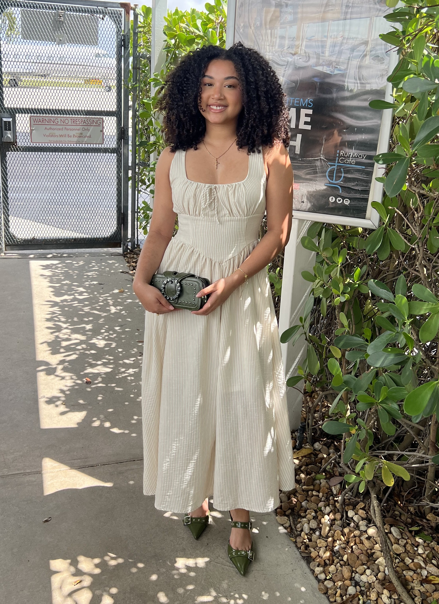

I'm a student at the University of Central Florida studying Digital Media on the Web and Interactive Media track with a minor in Information Technology. I plan to utilize my degree to pursue a career in UX/UI Design or Product Design. Here's some fun facts about me outside of my studies:
I love plants and have a few plant kids of my own. Gardening is very relaxing to me.
I played club volleyball for 8 years and I was an Assistant Coach breifly for a club team in Oviedo, FL.
My favorite hobby is painting and it's been a stress reliever for me since I was a child.
I grew up with a house full of animals, from hamsters and fish to dogs and ducks. I currently have my own cat named Zimi.
Great Design should be beautiful, creative, and intuitive. My goal is to create experiences that solve real user problems while remaining visually engaging, accessible, and enjoyable to use.
Research users, identify problems, and understand project goals.
Translate insights into clear objectives and user needs.
Explore solutions through sketches, wireframes, and brainstorming.
Create intuitive, visually
Gather feedback, validate decisions, and refine the experience.
Prepare assets, documentation, and specificatinos for development.